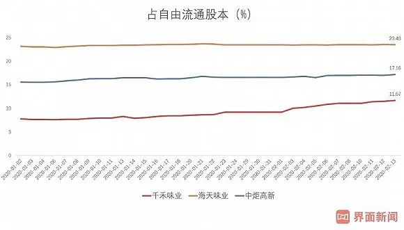

售楼处关闭怎么办？房企这样“战疫”
原文链接 备份链接 未来楼市调控松绑预期渐浓。 记者 | 王晓珊 编辑 | 盛倩玉 小豆 “销售旺季的时候，每个人每个月也就是接待20-30批次的客户，一场直播下来，可以加到40批的客户，相当于一个半月的客户量，线上直播还是有效果。”一位 …

图片来源：视觉中国
记者 | 袁颖琪 编辑 |陈菲遐
“
海天味业领涨酱油股的日子可能不多了。
”
突然来袭的疫情，把餐饮行业打了个措手不及，相应供应链企业也难逃影响。但是，酱油企业似乎是个例外。
2月开盘至今，海天味业（603288.SH）、中炬高新（600872.SH）和千禾味业（603027.SH）的涨幅分别为-0.37%，2.19%和6.26%。市场的反应大抵因为“酱油是必需消费品，受疫情影响不大”。
真的是这样吗？
其实，餐饮渠道是酱油行业占比最大的销售渠道。我们的判断是，短期内餐馆停业对酱油行业的影响是把双刃剑。而是利是弊的决定性因素在于渠道结构。
酱油销售渠道主要分为餐饮渠道、家庭渠道和食品加工渠道。其中，餐饮渠道不仅占比最大（约45%），还稳步提升；家庭渠道和食品加工渠道分别占比约为30%和25%。据中国产业信息网统计，餐饮渠道每千克食物调味品摄入量为家庭渠道的1.57倍。
以往，春节期间是餐饮行业的旺季。餐饮企业年前就已经备货，渠道经销商们也一样。今年疫情突然来袭，会使得餐饮企业和经销商手上都积压了存货。随后，经销商从酱油企业拿货的意愿就会降低。
餐饮渠道受冲击之下，首当其冲的就是酱油龙头——海天味业。海天以低端酱油占领市场，餐饮渠道销售占比高达六成，商超占三成，其他渠道只占一成。相比而言，中炬高新渠道结构更为均衡，餐饮，商超和其他渠道的比例为2.5：4：3.5。千禾味业主要产品定位家庭消费，其餐饮渠道不足10%，受本次疫情影响最小。
海天味业一直采用先款后货，以销定产的方式生产。海天会向经销商下达月度销售计划，并且以周订单的方式预付货款。但是，过年期间，经销商也会加大备货力度，2017和2018年年底预收账款占到当年销售总额的18%和19%，比平时高出约10个百分点。由此推测，海天2020年一季度的销售任务大概率可以完成。销售受影响会在二季度出现，因为经销商手里压了货没有消化掉，势必会影响继续订货。如果疫情3月底前可以得到控制，届时餐饮行业陆续恢复营业。那么，疫情会影响海天餐饮渠道收入的时间大约为2个月。参考海天2019年二季度营业额46.7亿元，假设餐饮渠道需求下降60%，那么公司2020年第二季度营业收入预计将下滑约16%左右，对全年影响约为4个百分点。

图片来源：界面新闻研究部
当然，硬币也有另一面。
餐馆虽然停业了，但吃饭毕竟是刚需。疫情期间，人们宅在家里，做饭的需求跟着上升了。这就刺激了零售端酱油消费。
千禾味业商超渠道占了约九成，家庭消费酱油增加意味着公司今年可能会实现超预期增长。此外，千禾味业在湖北的销售占比不多，所以受疫情影响更不明显。截止2019年前三季度，千禾味业中部地区的调味品销售收入只有0.44亿元，而渠道较为密集的西部地区贡献销售收入4.65亿元。假设疫情带动家庭消费增长为20%，为期两个月。那么，千禾味业今年营业额增加约4个百分点。
千禾味业的利润弹性还大于营业收入。这是因为这家公司是以高端零添加酱油为拳头产品。一直以来，高毛利更高的零添加酱油是带动千禾味业业绩增长的主动力。2019年前三季度千禾味业调味品收入为7.8亿元，同比增长32.72%，其中零添加产品收入约4.51亿元，同比增长34.46%。随着零添加产品占比继续扩大，千禾味业毛利率有望进一步提升。
酱油个股一直饱受诟病的就是以海天味业为中心的“抱团”高估值问题。
以滚动市盈率来看，海天味业当前估值为55倍，中炬高新为45倍，千禾味业为49倍。截止到去年三季报，三家公司的增速海天味业最高，约为22%。值得注意的是，三家公司对比2018年业绩增速已经出现大幅下滑。按照消费股普遍使用的PEG方法估值（市盈率估值与净利润增速比值，以1为界限，判断是否高估），已经处于明显高估状态。随着销售渠道越铺越密集，经过多年快速增长的酱油行业已经显露疲态。
不过，从沪股通持仓情况看，酱油股这种“抱团”高估值还没有松动迹象。2月3日以后，海天味业沪股通持仓市值占流通股股本比例从23.43%增加到23.48%。
中炬高新和千禾味业该比例增加的更为明显，分别增加了0.5和1.65个百分点。他们的持股数也相应有所增加。可见，外资对酱油个股依然看好，未见减持迹象。

图片来源：Wind、界面新闻研究部
由于现阶段对疫情影响的研判还不明确，外资持股逻辑偏重长期确定性，所以没有对海天味业进行业绩下修或减持的操作。一旦海天味业业绩增长不达预期，不排除外资短期内减持。那时候，酱油股集体高估值的情况将受到挑战。
未经授权 禁止转载

原文链接 备份链接 未来楼市调控松绑预期渐浓。 记者 | 王晓珊 编辑 | 盛倩玉 小豆 “销售旺季的时候，每个人每个月也就是接待20-30批次的客户，一场直播下来，可以加到40批的客户，相当于一个半月的客户量，线上直播还是有效果。”一位 …
原文链接 备份链接 《创新经济战疫计划》，是燃财经在新型肺炎疫情期间推出的特别栏目，关注创新经济企业遇到的新难题、商讨应该采取的新对策，希望能够帮助中小企业一起战胜挑战、把握机会。本文是第7期。查看前6篇请点击《哪些行业正在逆势爆 …
原文链接 备份链接 原本打算在春节期间大有作为的餐饮业，被疫情来了一次“精确打击”。在现金流高度紧张的情况下，很多停摆企业仅能维持2-3个月。在一些从业者看来，真正的挑战在复工之后，疫情可能会带来餐饮业的一次洗牌。 记者 | …
原文链接 备份链接 大家好，我是田静。 按照规定，今天已经是春节后第三个工作日了，我依旧待在家里处理工作。我以为很多人会和我一样，但事实却是：很多人冒着风险走出家门，回到自己的工作岗位。 离疫情中心千里远中越边境，张扬过了四个关卡才回到单 …
原文链接 备份链接 对于2019年就陷入负增长的中国手机零售市场来说，这场疫情无疑是雪上加霜。相对线下渠道的全面收缩，线上渠道亦受影响 文 |《财经》记者 陈潇潇 王凤 编辑 | 谢丽容 往年春节期间，从过完除夕到正月十五，历来是手机销售 …